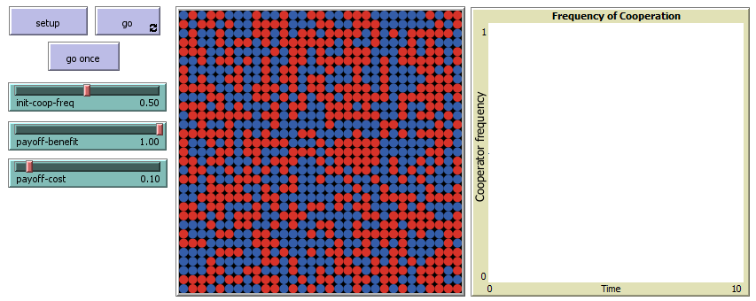
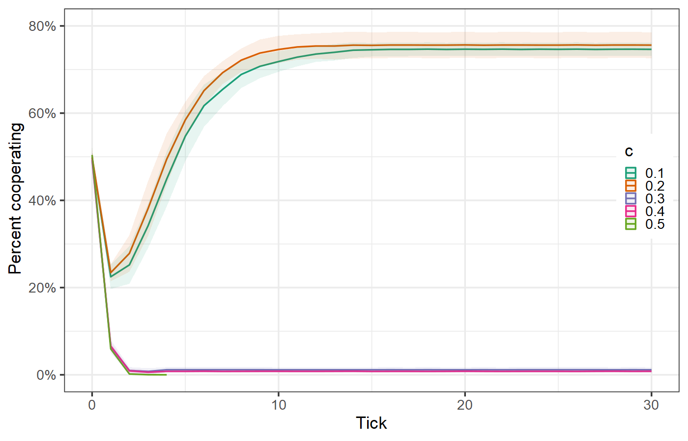
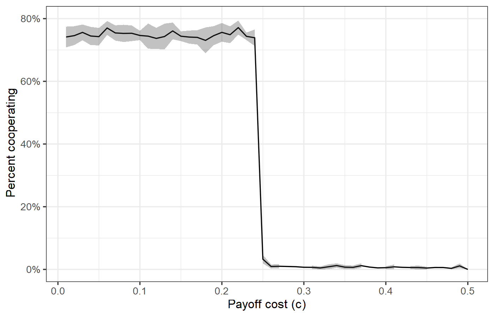
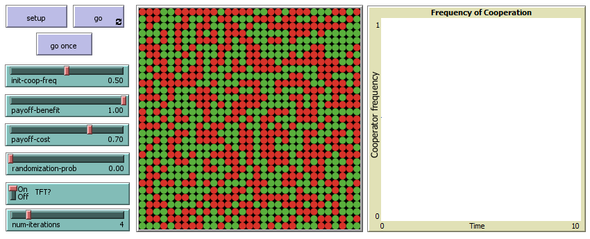
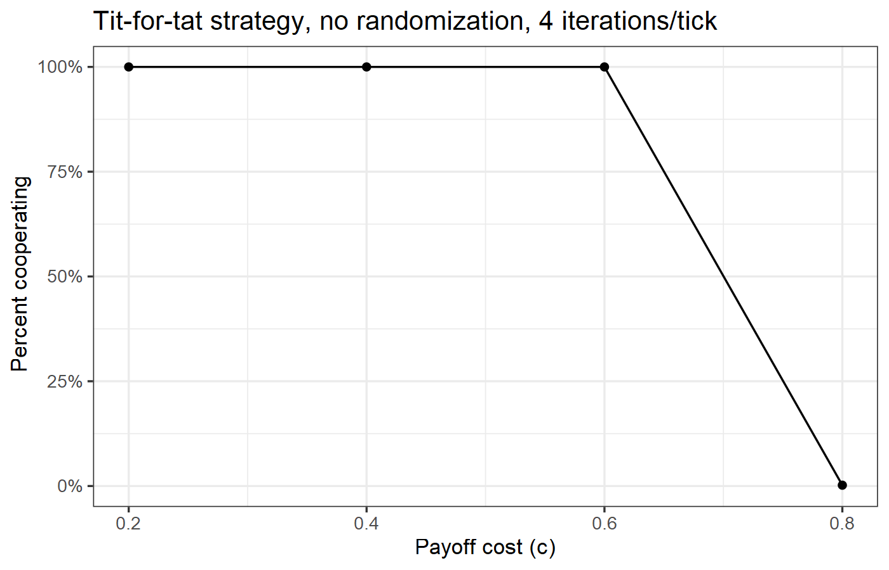
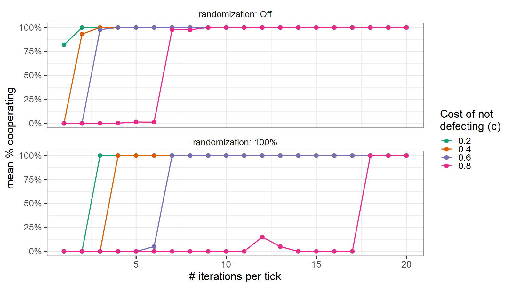
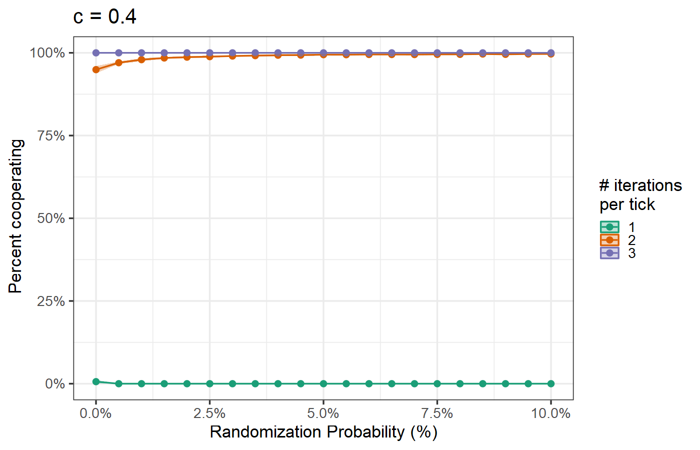
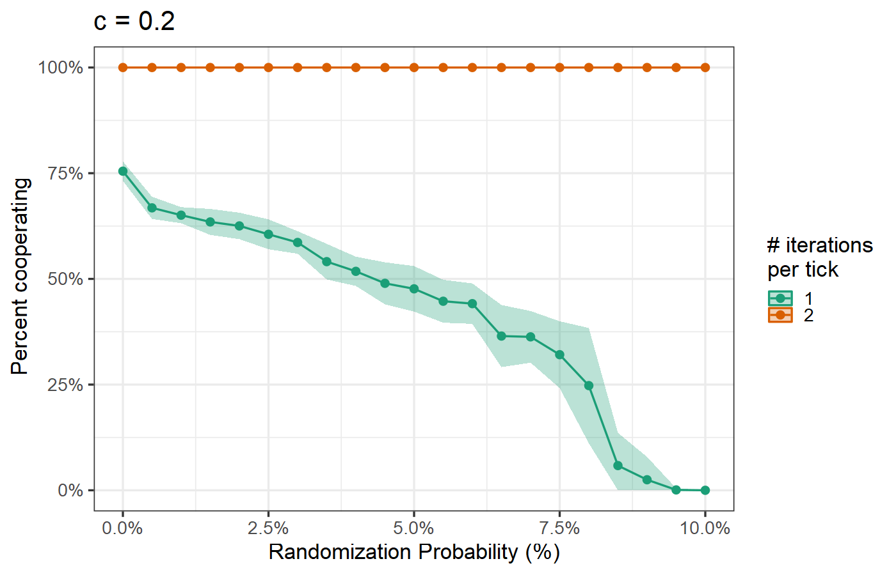

EES 4760/5760
Agent-Based and Individual-Based Computational Modeling
J. Magnolia Gilligan
Class #14: Tuesday, October 13, 2026
10.1073/pnas.36.1.48
Many centuries of writings on war and gambling
Sun Tzu, The Art of War (5th century BCE)
Knowing the other and knowing oneself: In one hundred battles, no danger.
Not knowing the other and knowing oneself: One victory for one loss.
Not knowing the other and not knowing oneself: In every battle, certain defeat.
Girolamo Cardano, Liber de Ludo Alea (Book on Games of Chance) (1564)
John von Neumann (Photo: Los Alamos National Laboratory)
John Nash (Photo: MIT Museum)
| B cooperates | B defects | |
|---|---|---|
| A cooperates | \(b - c\), \(b - c\) | \(-c\), \(b\) |
| A defects | \(b\), \(-c\) | \(0\) |
PD_simple.nlogo



PD_reciprocity.nlogo



